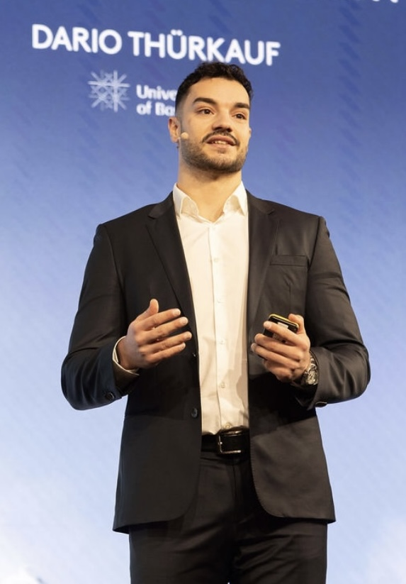

About
I am a PhD Candidate in Distributed Ledger Technology and Fintech at the University of Basel, advised by Prof. Dr. Fabian Schär. My research focuses on public permissionless blockchains and cryptoassets, with a particular emphasis on blockchain as financial market infrastructure, including the analysis of consensus protocols, market microstructure (MEV), and decentralized finance (DeFi).
Before starting my PhD, I completed a Bachelor of Arts in Business and Economics and a Master of Science in Business and Technology, both at the University of Basel.
I'm always happy to discuss research and current topics in blockchain. The best way to reach me is by email.
